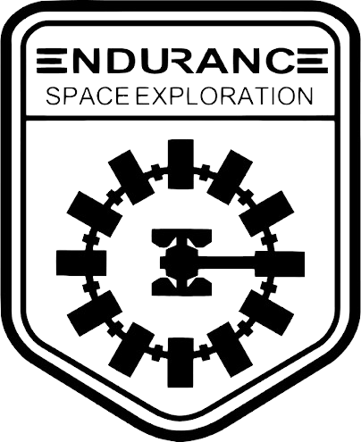

Missão Aura
O planeta desconhecido está logo à frente. Responda às perguntas e descubra qual perfil da tripulação combina com você.

O planeta desconhecido está logo à frente. Responda às perguntas e descubra qual perfil da tripulação combina com você.